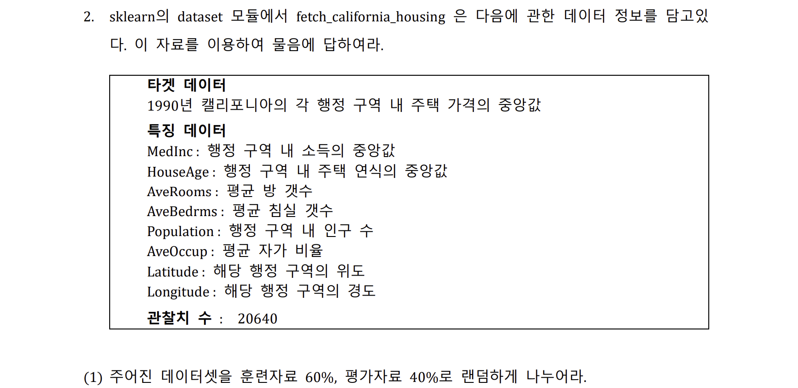
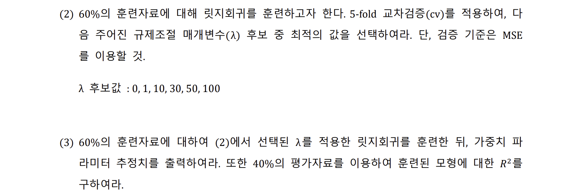
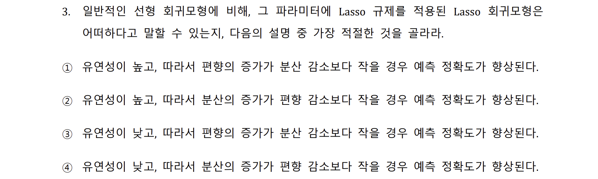

import numpy as npfrom sklearn.metrics import mean_squared_errornp.random.seed(123)xtrain =2* np.random.rand(100, 3)ytrain =6+ xtrain @ np.array([[3],[2],[5]]) + np.random.randn(100, 1)xtest =2* np.random.rand(20, 3)ytest =6+ xtest @ np.array([[3],[2],[5]]) + np.random.randn(20,1)# (1)def gradient_descent_steps(xtrain, ytrain, iters):# m = 훈련데이터의 수, n = 변수의 개수 m, n = xtrain.shape# 절편항 추가를 위해 x0=1을 각 훈련데이터에 추가 X = np.insert(xtrain, 0, 1, axis =1) Y = ytrain# 파라미터 theta의 초기값은 1, 절편항까지 n+1개 theta = np.ones(n+1).reshape(n+1,1)for i inrange(iters):# 비용함수 = (오차의 제곱합) / 2m 형태로 가정 gradient = X.T @ (X @ theta - Y) / m theta -=0.01* gradientreturn thetaw_pred = gradient_descent_steps(xtrain, ytrain, iters=5000)print("Best parameters are :")print( w_pred )# (2)ypred = np.insert(xtest,0,1,axis =1) @ w_predmse = mean_squared_error(ytest, ypred)print("Mean Squared Error is :")print(mse)
Best parameters are :
[[5.72120369]
[3.00637126]
[2.29860859]
[4.9014743 ]]
Mean Squared Error is :
0.8604989666540144
Question 2


import pandas as pdfrom sklearn.datasets import fetch_california_housingfrom sklearn.model_selection import train_test_splithousing = fetch_california_housing()# (1)y = housing['target']x = pd.DataFrame( housing['data'], columns=housing['feature_names'] )# train_test_split 모듈 이용x_train, x_test, y_train, y_test = train_test_split(x,y,test_size=0.4, random_state=123)print("Split data to training 0.6 and test 0.4 ratio")print("Data size of X train, test : ",x_train.shape[0], x_test.shape[0])print("Data size of y train, test : ",y_train.shape[0], y_test.shape[0])
Split data to training 0.6 and test 0.4 ratio
Data size of X train, test : 12384 8256
Data size of y train, test : 12384 8256
alpha is : 1
coef. is : [ 0.83361052 0.11707262 -0.28230537 0.33026218 0.00106348 -0.04327138
-0.89953142 -0.87471626]
Question 3

Answer : 3번
기본적으로 규제가 있는 회귀모형은 일반적인 회귀모형에 비하여 유연성이 떨어집니다.
비용함수를 최소화시켜나가는 과정에서 파라미터가 만족해야할 추가적인 조건이 붙기 때문입니다.
이를 알기 쉽게 경사하강법을 예시로 들어보면, 매 파라미터를 업데이트해나갈 때,
규제가 있는 회귀모형에서는 규제로 인해 업데이트를 원하는 만큼 실시할 수 없게 됩니다.
따라서 규제가 조금이라도 존재한다면, 일반적인 회귀모형에 비해서 유연성이 떨어집니다.
유연성은 떨어지는 대신 장점이 있는데, 모델의 overfitting 문제를 잘 해결한다는 것 입니다.
모델이 train data로 훈련할 때 파라미터에 제약을 가하기 때문에, 모델이 과적합되지 않도록 적정히 조절하게 됩니다.
이를 종합해보면, 규제가 있는 회귀모형은 유연성이 떨어져 다소 편향이 발생하게 되지만,
과적합을 방지함으로써 분산이 감소되는 효과 있다는 의미가 됩니다.
따라서 규제의 여부와 규제의 정도를 결정할 때, 이러한 trade-off를 잘 이해하여야 합니다.
분산 감소효과가 편향 증가효과보다 클 때, 규제를 가하거나 규제의 정도를 강화하는 것이 적합할 것 입니다. (3번)
Source Code
# 인공지능 및 기계학습 과제1 {.unnumbered}20249132 김형환## Question 1### Answer```{python}import numpy as npfrom sklearn.metrics import mean_squared_errornp.random.seed(123)xtrain =2* np.random.rand(100, 3)ytrain =6+ xtrain @ np.array([[3],[2],[5]]) + np.random.randn(100, 1)xtest =2* np.random.rand(20, 3)ytest =6+ xtest @ np.array([[3],[2],[5]]) + np.random.randn(20,1)# (1)def gradient_descent_steps(xtrain, ytrain, iters):# m = 훈련데이터의 수, n = 변수의 개수 m, n = xtrain.shape# 절편항 추가를 위해 x0=1을 각 훈련데이터에 추가 X = np.insert(xtrain, 0, 1, axis =1) Y = ytrain# 파라미터 theta의 초기값은 1, 절편항까지 n+1개 theta = np.ones(n+1).reshape(n+1,1)for i inrange(iters):# 비용함수 = (오차의 제곱합) / 2m 형태로 가정 gradient = X.T @ (X @ theta - Y) / m theta -=0.01* gradientreturn thetaw_pred = gradient_descent_steps(xtrain, ytrain, iters=5000)print("Best parameters are :")print( w_pred )# (2)ypred = np.insert(xtest,0,1,axis =1) @ w_predmse = mean_squared_error(ytest, ypred)print("Mean Squared Error is :")print(mse)```## Question 2```{python}import pandas as pdfrom sklearn.datasets import fetch_california_housingfrom sklearn.model_selection import train_test_splithousing = fetch_california_housing()# (1)y = housing['target']x = pd.DataFrame( housing['data'], columns=housing['feature_names'] )# train_test_split 모듈 이용x_train, x_test, y_train, y_test = train_test_split(x,y,test_size=0.4, random_state=123)print("Split data to training 0.6 and test 0.4 ratio")print("Data size of X train, test : ",x_train.shape[0], x_test.shape[0])print("Data size of y train, test : ",y_train.shape[0], y_test.shape[0])``````{python}from sklearn.linear_model import Ridgefrom sklearn.model_selection import GridSearchCVfrom sklearn.preprocessing import StandardScaler# (2) 표준화 후 GridSearchCV 모듈 활용. 하이퍼파라미터 튜닝 및 재훈련.scaler = StandardScaler()scaler.fit( x_train )x_train = scaler.transform( x_train )x_test = scaler.transform( x_test )params = {'alpha': [0, 1, 10, 30, 50, 100]}housing_grid_ridge = GridSearchCV ( Ridge(), param_grid=params, cv=5, scoring='neg_mean_squared_error', refit=True)housing_grid_ridge.fit( x_train, y_train )print("The best lambda(alpha) is :",housing_grid_ridge.best_params_)``````{python}from sklearn.metrics import r2_score# (3) GridSearchCV 결과값 및 r2_score 함수 활용housing_ridge = housing_grid_ridge.best_estimator_y_pred = housing_ridge.predict( x_test )R2 = r2_score( y_test, y_pred )print("The coefficients are : ",housing_ridge.coef_,"\n")print("R-square is :", R2)```::: {.callout}GridSearchCV 대신 cross_val_score를 이용해도 동일한 결과를 얻을 수 있습니다.```{python}from sklearn.linear_model import Ridgefrom sklearn.model_selection import cross_val_scoreparams = [0, 1, 10, 30, 50, 100]mse = np.ones(6)for al inrange(6): ridge = Ridge(alpha=params[al]) neg_mse_scores = cross_val_score(ridge, x_train, y_train, scoring='neg_mean_squared_error', cv=5) avg_rmse = np.mean(np.sqrt(-1*neg_mse_scores)) mse[al] = avg_rmsealpha_star = params[mse.argmin()]ridge = Ridge(alpha=alpha_star)ridge.fit( x_train, y_train )print("alpha is : ", alpha_star)print("coef. is : ", ridge.coef_)```:::## Question 3### Answer : 3번**기본적으로 규제가 있는 회귀모형은 일반적인 회귀모형에 비하여 유연성이 떨어집니다.**비용함수를 최소화시켜나가는 과정에서 파라미터가 만족해야할 추가적인 조건이 붙기 때문입니다.이를 알기 쉽게 경사하강법을 예시로 들어보면, 매 파라미터를 업데이트해나갈 때,**규제가 있는 회귀모형에서는 규제로 인해 업데이트를 원하는 만큼 실시할 수 없게** 됩니다.따라서 규제가 조금이라도 존재한다면, 일반적인 회귀모형에 비해서 유연성이 떨어집니다.**유연성은 떨어지는 대신 장점이 있는데, 모델의 overfitting 문제를 잘 해결**한다는 것 입니다.모델이 train data로 훈련할 때 파라미터에 제약을 가하기 때문에, 모델이 과적합되지 않도록 적정히 조절하게 됩니다.**이를 종합해보면, 규제가 있는 회귀모형은 유연성이 떨어져 다소 편향이 발생하게 되지만,****과적합을 방지함으로써 분산이 감소되는 효과 있다는 의미**가 됩니다.따라서 규제의 여부와 규제의 정도를 결정할 때, 이러한 trade-off를 잘 이해하여야 합니다.**분산 감소효과가 편향 증가효과보다 클 때, 규제를 가하거나 규제의 정도를 강화하는 것이 적합**할 것 입니다. ***(3번)***